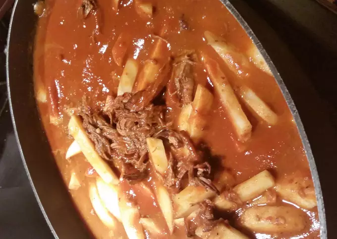

Hilachas
Hilachas are a traditional Guatemalan Staple passed down by generations.
This dish
consists of shredded beef, potato and a red sauce.
Takes about 3-4 hours to
prepare and cook.
- 2 tbsp garlic
- 1 onion
- 2 lb flank steak
- 2 small pasilla Ancho chile (dry)
- 1 California chile (dry)
- 1 ground cumin
- 8 tomatoes
- 3 large tomatillos
- 4 large white potatoes
- 1 rice (optional)
- Cut the potatoes and onion in fourths
- Pan or Oven roast the chiles
- add all Ingredients in 2-3 quarts of water
- bring to a boil
- take out meat when it looks brittle and easy to shred
- cook rice
- liquify all Ingredients except potatoes
- add everything back to the pot with the sauce
- simmer for an extra 30 min til it thickens
- SERVE